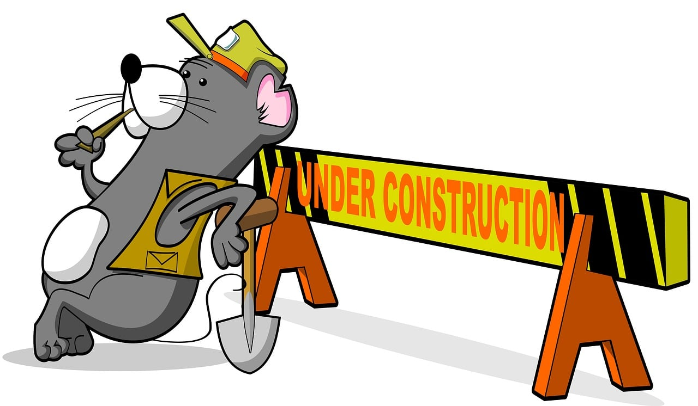

Blog
-
About Me
Hello and welcome!
I'm Mark — a Finnish professional in my mid-20s with a passion for the intersection of art, technology, and business. I draw inspiration from both creative minds and tech innovators, and I love exploring different cultures, especially across Asia.My main expertise is in Business Intelligence, but I also spend a lot of my free time on photography, music production, web development, and building side projects that make everyday life more efficient and enjoyable.
I recently earned a Master’s degree in Finance and gained hands-on experience at ABB and Varma. You can read my master’s thesis here: One index, many regions: revenue distribution and index performance — Evidence from the Euro Stoxx 50
How I Can Help
I’m available for collaborations or freelance work in areas such as:- Business Intelligence solutions — Automating analytics for demand forecasting, pricing, sales trends, supply chain, customer insights, HR, and finance.
- Photography — Creative and professional photography for individuals and businesses.
- Marketing strategy — From content creation to campaign execution.
- Finance automation — Streamlining reporting and analysis with Excel, Power BI, Databrics or Python.
- Music production — Composition, mixing, and mastering for independent and commercial projects.
- Product and service development — Concept validation, prototyping, and early-stage strategy for digital or physical products.
Let’s Connect
📧 Email: alexander.mozheiko@gmail.com
🔗 LinkedIn: Connect with me
Looking forward to hearing from you! -
Fear of career failure
Blog section is under development 
-
Best softwares
While being unemployed, I have been continuously deepening my knowledge in various IT and data management solutions. There is a great amount of open-source solutions that large companies do not use effectively. Instead, they mostly stick to Microsoft solutions, which are okay but often glitchy.
Here are some software tools I would recommend for an early-stage startup or small business as they are affordable (some are open-source) and effective:
- Business Intelligence solutions: Metabase, Looker Studio (hard to use), Superset. However, I would still prefer Power BI as it is powerful and affordable.
- Automation: Relay, Make, Zapier, n8n (from easiest to most powerful).
- Website: Websites I would host for free on GitHub Pages or Netlify and purchase a custom domain from Porkbun. Try Odoo, its great if you want to build without coding.
- eCommerce: For quick initial development, I would use yns or Odoo. Both of these are powerful tools, and Odoo is currently my favorite software overall.
- Accounting/SCM: Odoo, ERPNext,
- Data management: Supabase and Google Drive.
All of these tools can help build a great foundation for a starting company. They are definitely not mandatory, and most profitable businesses start with an idea and dedicated founders. You can get far with just Excel, a phone, and Google. Even having your own website is not a must; it is just nice to have. Founders often focus too much on tools and forget that business is about customers and solving their problems.
For me, starting something with a strong foundation is just a method to reduce cognitive overload. Instead of posting on social media individually, I would prefer to automate it and focus on creating content rather than manually posting it everywhere.